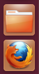

Uporaba zaganjalnika za zaganjanje programov

Zaganjalnik je eden od ključnih sestavnih delov namizja Unity. Ko se prijavite na namizje, se bo pojavil na levi strani zaslona. Zaganjalnik zagotavlja enostaven dostop do programov, delovnih površin, odstranljivih naprav in smeti.
V primeru da se program, ki ga želite uporabljati, nahaja v Zaganjalniku, lahko kliknete na ikono programa in začel se bo pripravljen za uporabo.
Za več o Zaganjalniku raziščite katerokoli od tem pomoči o Zaganjalniku spodaj.
Prilagoditev Zaganjalnika
Več podrobnosti
- Namizje
- Namizni vodnik Ubuntu — Namizni vodnik Ubuntu